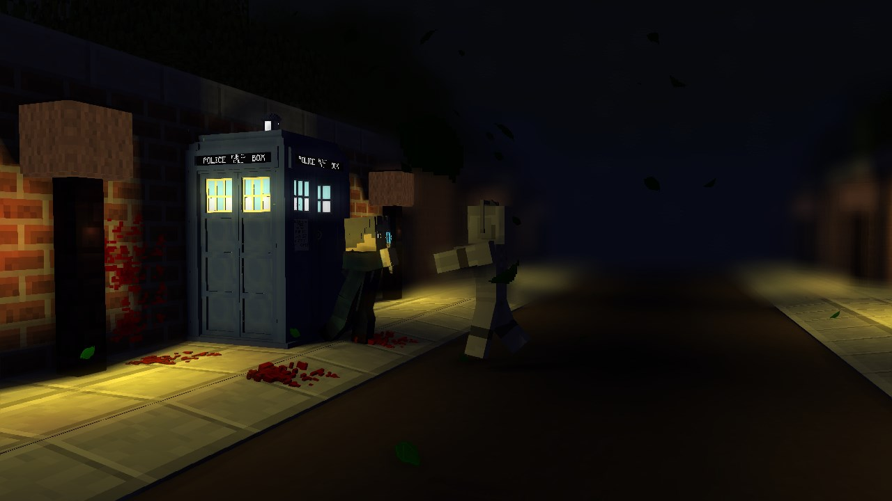
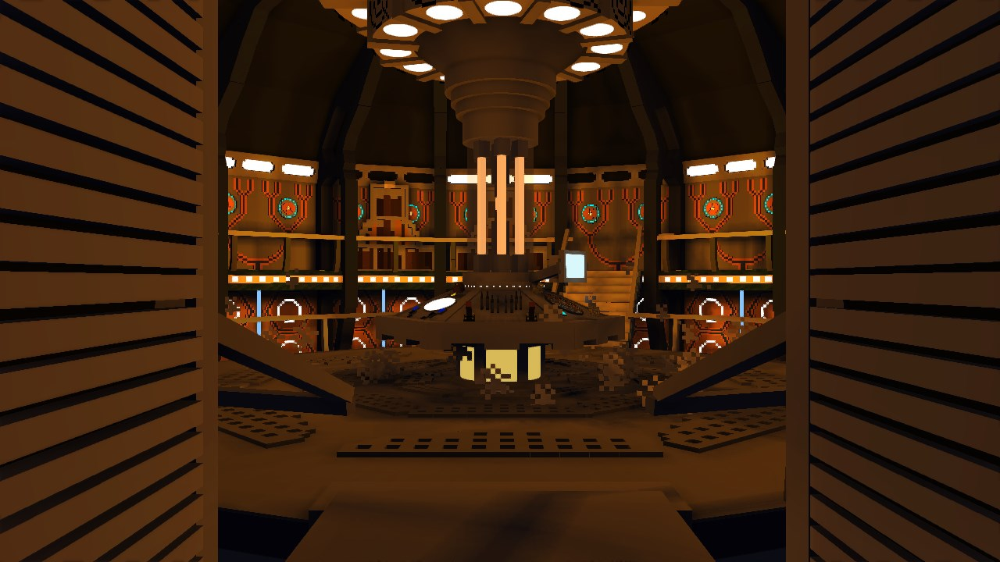
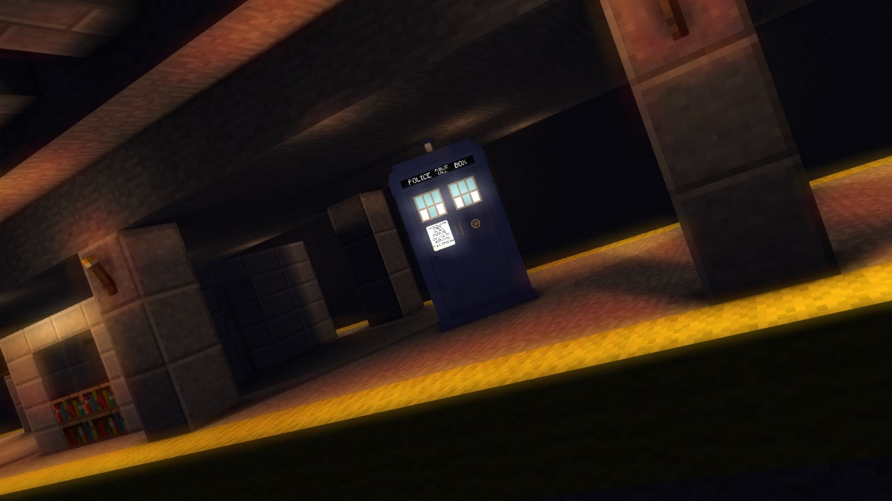
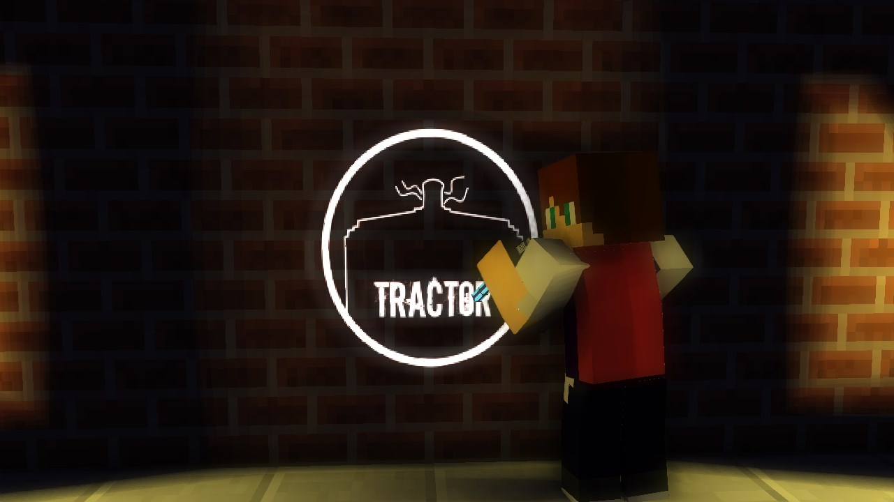

Tractor The Animator
Tractor the Animator is an animator who finds joy in animation and Doctor Who.
Whilst not doing much in the line of videos, his work is very promising.
Tractor (aka Will) is a 14 year old MURICAN. He never feels alone in the animation community because he has people to back him up.



